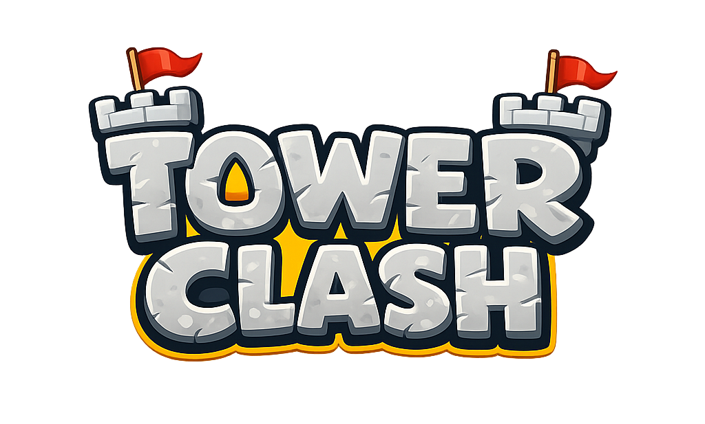
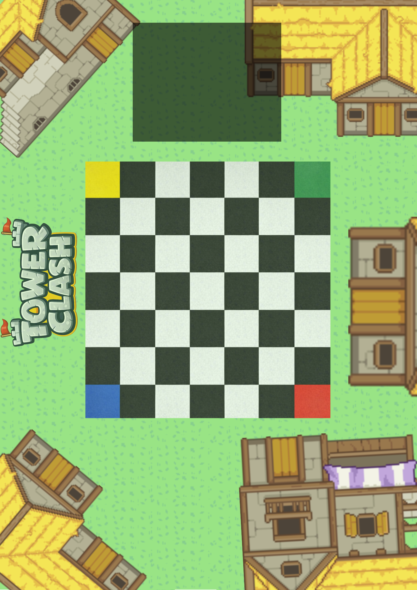
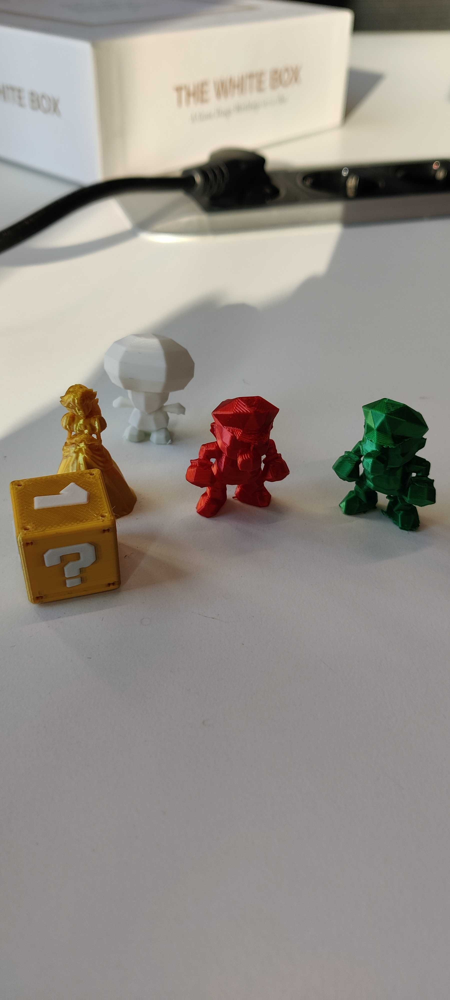
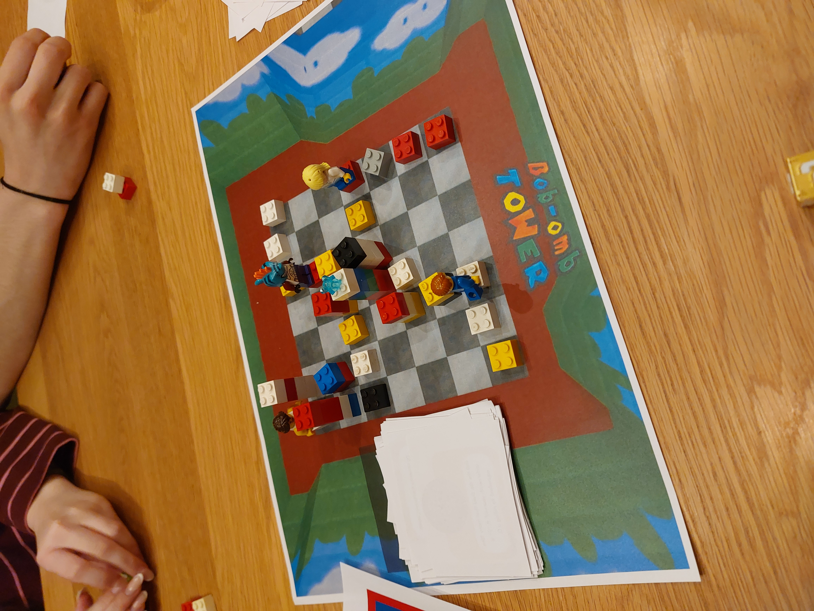
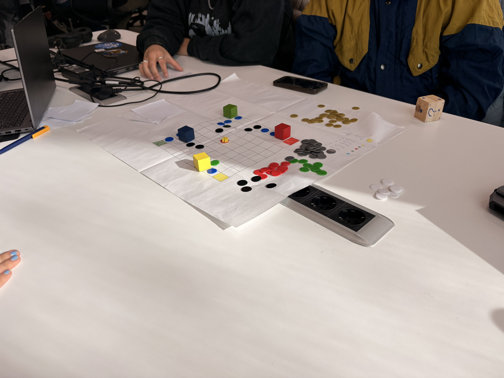

New Theme
I replaced the Mario-inspired setting with a medieval castle: a crown instead of a star and knights instead of characters. Card names and visuals were rewritten to match.
A medieval board game where the board is part of the strategy: build, climb and block your way to the crown.

Tower Clash started as a two-week group assignment called Bob-omb Tower. I kept developing it on my own: a new medieval theme, clearer rules, a card system and several rounds of playtesting. Players place tiles, climb higher and race to the crown in the middle of the board.


I replaced the Mario-inspired setting with a medieval castle: a crown instead of a star and knights instead of characters. Card names and visuals were rewritten to match.
The board is a 7×7 grid with a start corner for each player. Players can climb one level at a time, stacks go up to five tiles, and the goal itself can be raised.
I designed a deck of 78 cards in seven groups: movement, defence, board control, action boosts, dice, risk and card draw.
LEGO bricks and a paper board let me change heights and test climbing rules quickly, before spending time on final components.


Tower Clash is still in development, but the foundation is solid: a clear theme, a tested core and a card system that is ready for the next playtests. Next up: testing the dice-free version, then game length, rule clarity and replayability with new groups.